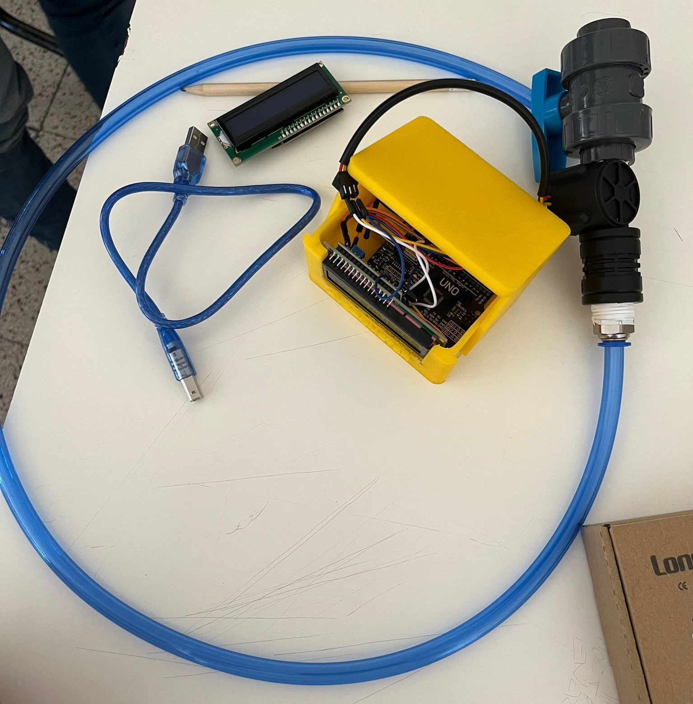

Hydrometer è un semplice misuratore d'acqua che ti consente di sapere quanta acqua hai utilizzato per qualsiasi attività quotidiana. Che sia lavarsi le mani, fare il bagno, oppure lavare frutta e verdura.

Questo è un progetto di Educazione Civica della 2CIT dell'ITT Allievi-Sangallo per sensibilizzare l'utilizzo consapevole dell'acqua, uno dei traguardi dell'Obiettivo 12 della famosa Agenda 2030 delle Nazioni Unite.
L'acqua è un bene prezioso. Meno dell'1% dell'acqua presente sulla Terra è accessibile e potabile, e la richiesta idrica totale è di circa 1400 miliardi di miliardi di litri!(fonte)
Usa il menù in alto a sinistra per vedere tutti i contenuti.